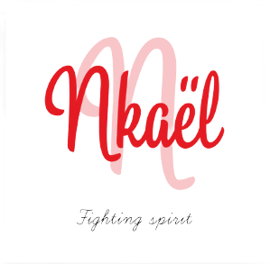
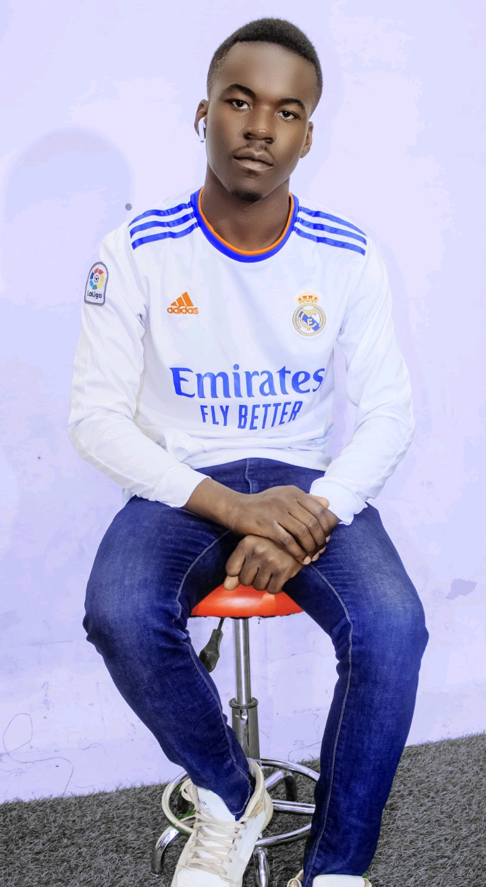
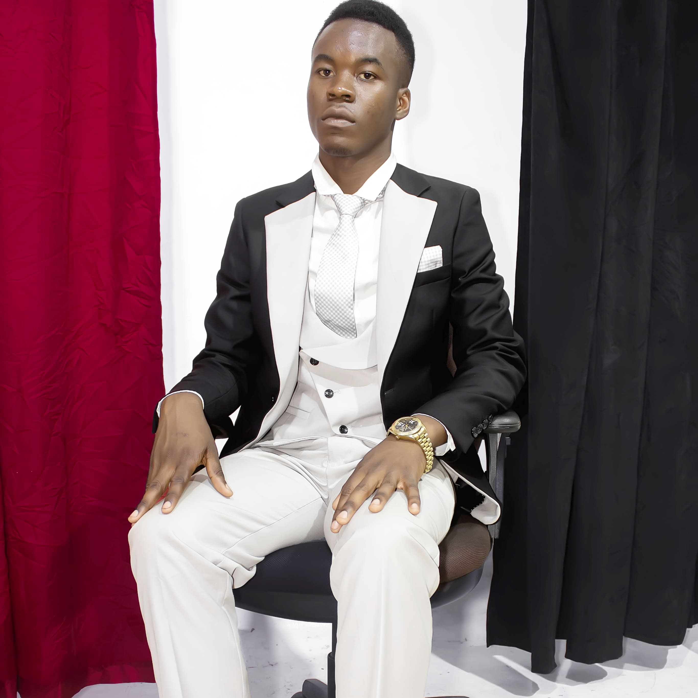
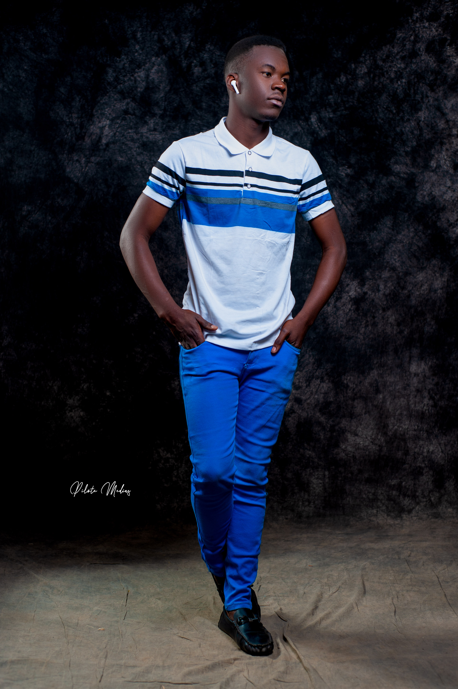

ACCUEIL

BIENVENUE sur le site oficiel de Naël
mes rèves

j'ai toujours revé d'être ce que je suis entrain de devenir ,
c'est à dire un melange d'electronique , informatique et poesie qu'untel appelle electropoetique.
le chemin est encore long por parvenir à mon idéal ,
mais ma motivation à arriver est mon arme secrete pour cette fin .cela, encore parce que je fais partie de la race qui n'abandonne jamais

mes ambitions

devenir expert en informatique,
en general et en administration système en particulier et pour y arriver gravir tous les echelons possible devant moi
sans se plaindre de la dureté des obstacles et de la cruauté des embuches
ma dignité

ce respect que j'accorde à moi-même
et aux autres definie fidellement mon identé qui prone
les moeurs et les valeurs apprises dans ma culture et ma religion
